LUSC · RNA-seq: contagens brutas (GDC)
STAR - Counts (GENCODE v36) · gerado em 22/10/2026 01:40
53,2 Mtamanho mediano
0,68dispersão mediana α
17.757genes
501amostras tumorais
51amostras normais
0,0%valores faltantes
Fonte: API do GDC (STAR - Counts)
Principais resultados
- Bibliotecas de 14,3 a 151,9 milhões de leituras (mediana 53,2). 45.432 de 60.660 features têm leitura em pelo menos 10% das amostras.
- A variância cresce bem acima da média: a dispersão mediana da binomial negativa é α=0.68 (para features com média > 10). Isso descarta um modelo Poisson e indica binomial negativa (ou Poisson-lognormal) na verossimilhança.
- A fração de zeros é compatível com a binomial negativa (diferença mediana -3,1%); inflação de zeros não parece necessária.
- Em média 8,3% das leituras de cada amostra vão para as 20 features mais abundantes (IGHG1, MT-CO1, MT-ND4).
- Genes codificadores de proteína recebem 96,4% das leituras (mediana).
- 17.757 genes medidos em 552 amostras (501 tumorais e 51 normais); 0,0% dos valores estão faltando.
- Os dois primeiros componentes principais explicam 22,7% e 7,1% da variância das features mais variáveis.
- Correlação mediana entre amostras: 0,57.
- Amostras com correlação muito abaixo das demais (possíveis outliers técnicos): TCGA-37-4129-01.
- Tumor x normal: 15484 genes diferentes com FDR < 5% (9219 maiores no tumor, 6265 maiores no normal; 51 pacientes têm o par tumor-normal).
- Mais aumentados no tumor: ENSG00000237978.6, ENSG00000249395.4, ENSG00000127928.13, ENSG00000254560.6, ENSG00000011677.13, ENSG00000185306.13, ENSG00000130829.18, ENSG00000127423.11.
- Mais reduzidos no tumor: ENSG00000168484.12, ENSG00000131400.8, ENSG00000171885.18, ENSG00000122852.15, ENSG00000136732.16, ENSG00000110195.14, ENSG00000157765.13, ENSG00000133661.17.
- Associações clínicas com p < 0,05 nos componentes principais: PC3 com estádio (p=0.042); PC1 com sexo (p=0.00063); PC1 com idade (p=0.0031); PC3 com idade (p=0.0022); PC1 com sobrevida (p=0.02).
Biblioteca
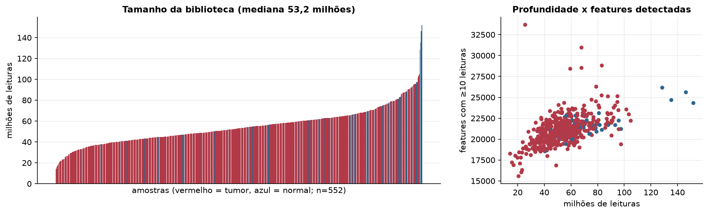
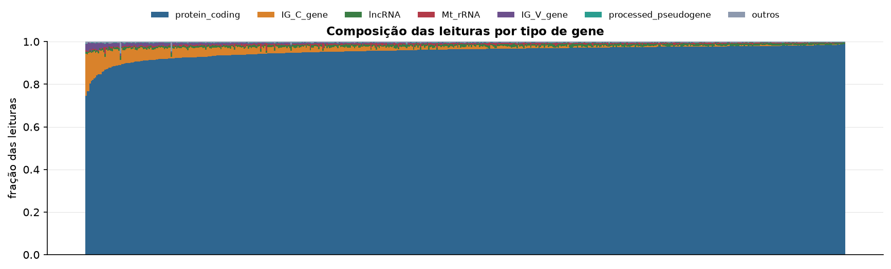
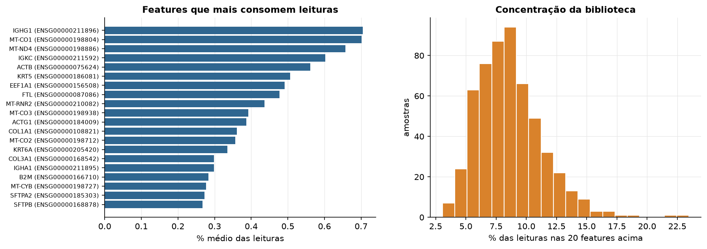
Sobredispersão e zeros
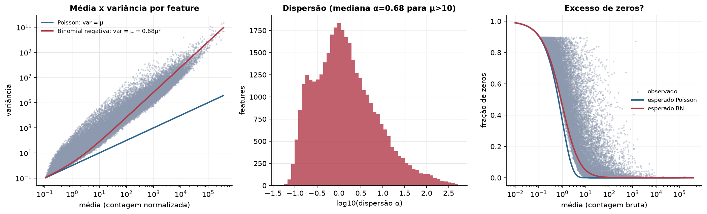
Exploração em log2(CPM+1)
Features com CPM ≥ 1 em pelo menos 20% das amostras (17.757 features).
Distribuição dos valores
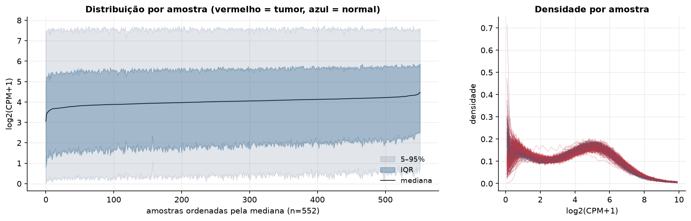
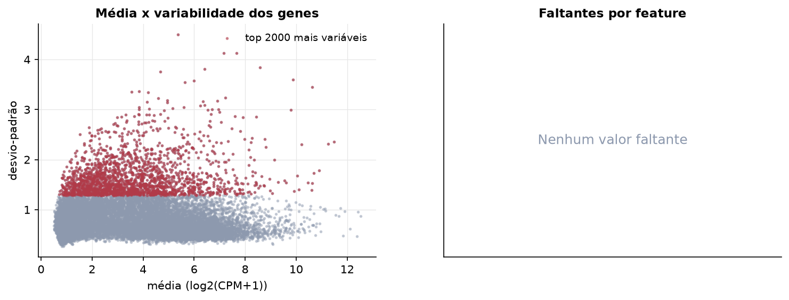
Estrutura das amostras
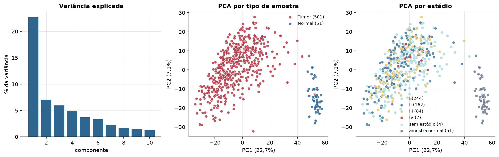
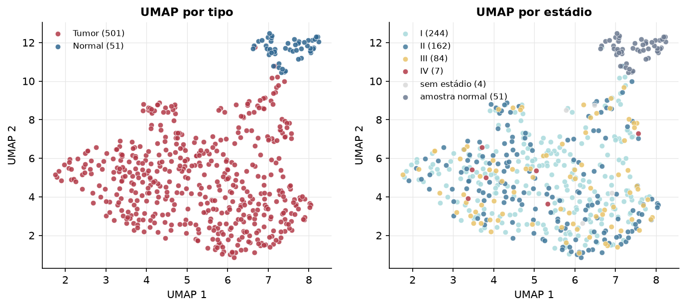
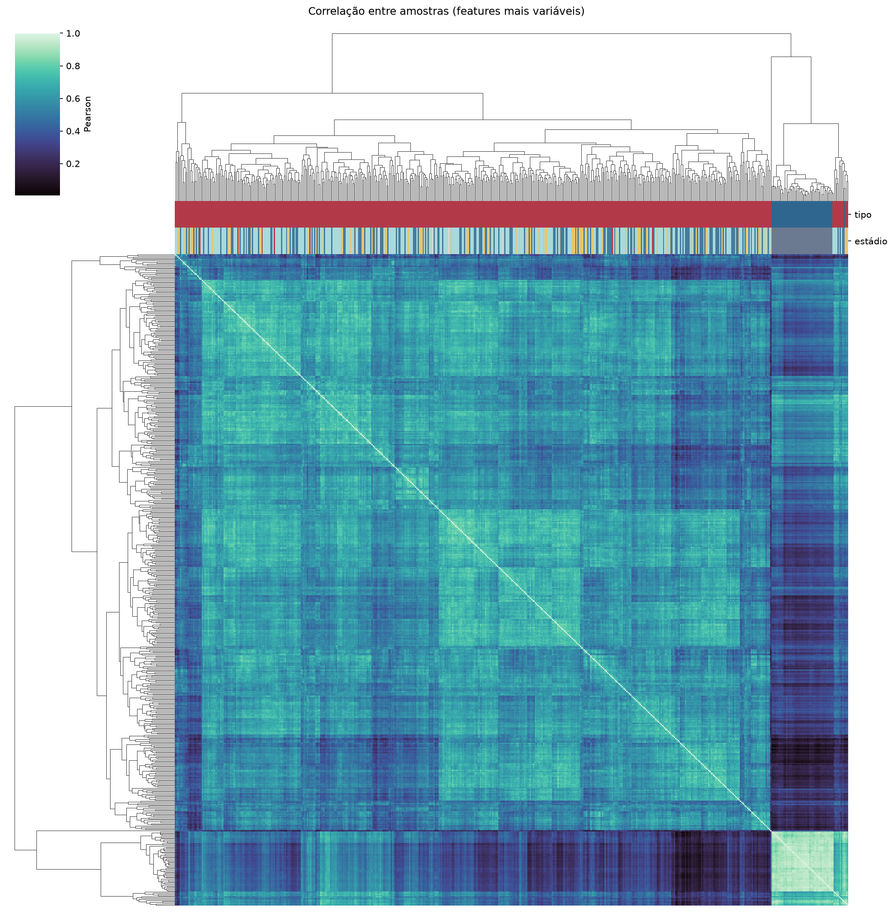
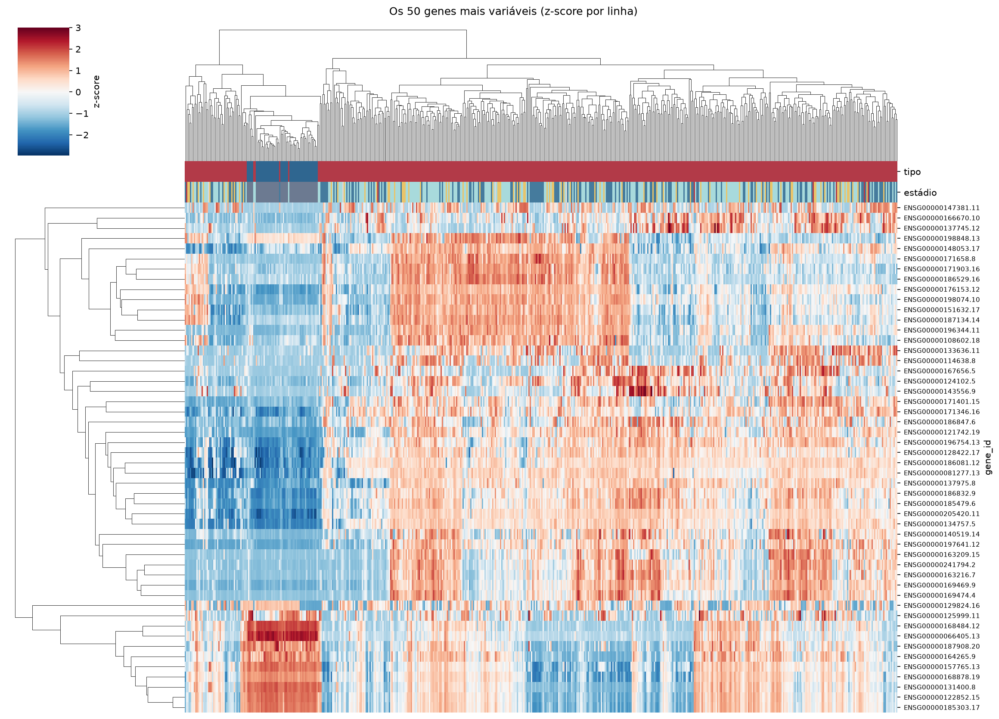
Tumor x normal
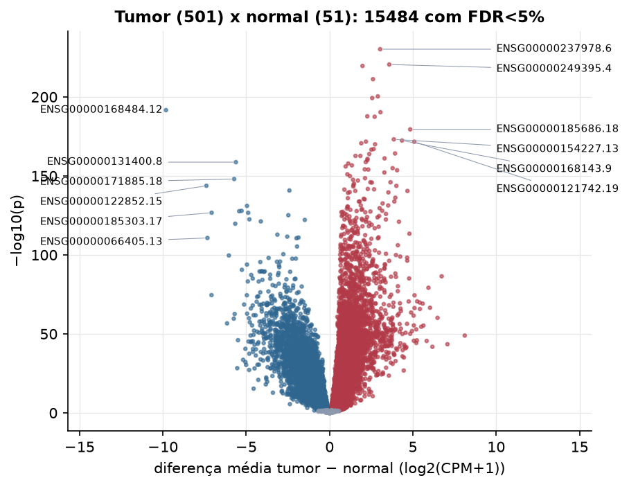
Features mais diferentes entre tumor e normal
| gene_id | diferenca_tumor_menos_normal | t | p | fdr |
|---|---|---|---|---|
| ENSG00000237978.6 | 3.035 | 57.316 | 6.24e-231 | 1.11e-226 |
| ENSG00000249395.4 | 3.58 | 54.877 | 3.12e-221 | 2.77e-217 |
| ENSG00000127928.13 | 1.978 | 55.198 | 2.48e-220 | 1.47e-216 |
| ENSG00000254560.6 | 2.607 | 51.934 | 5.98e-212 | 2.66e-208 |
| ENSG00000011677.13 | 2.896 | 49.253 | 4.69e-201 | 1.66e-197 |
| ENSG00000185306.13 | 2.56 | 49.247 | 5.12e-200 | 1.52e-196 |
| ENSG00000168484.12 | -9.816 | -52.713 | 2.35e-192 | 5.96e-189 |
| ENSG00000130829.18 | 3.054 | 46.399 | 4.94e-191 | 1.1e-187 |
| ENSG00000127423.11 | 2.264 | 60.351 | 1.89e-188 | 3.73e-185 |
| ENSG00000144045.14 | 2.706 | 46.792 | 3.53e-188 | 6.28e-185 |
| ENSG00000185686.18 | 4.839 | 43.68 | 3.54e-180 | 5.71e-177 |
| ENSG00000154227.13 | 3.854 | 42.065 | 7.45e-174 | 1.1e-170 |
| ENSG00000168143.9 | 4.347 | 58.744 | 4.01e-173 | 5.47e-170 |
| ENSG00000253293.5 | 2.183 | 42.615 | 2.07e-172 | 2.62e-169 |
| ENSG00000121742.19 | 5.084 | 41.908 | 2.49e-172 | 2.95e-169 |
| ENSG00000267284.2 | 1.902 | 42.742 | 2.18e-171 | 2.42e-168 |
| ENSG00000205488.9 | 2.731 | 41.31 | 9.91e-171 | 1.03e-167 |
| ENSG00000006377.11 | 2.648 | 41.624 | 1.01e-167 | 9.99e-165 |
| ENSG00000168779.20 | 2.509 | 40.918 | 2.37e-167 | 2.21e-164 |
| ENSG00000158055.16 | 3.931 | 46.679 | 6.18e-165 | 5.49e-162 |
| ENSG00000225548.7 | 2.382 | 41.201 | 1.47e-164 | 1.24e-161 |
| ENSG00000249001.5 | 1.557 | 39.648 | 2.21e-163 | 1.74e-160 |
| ENSG00000250682.6 | 1.847 | 40.933 | 2.26e-163 | 1.74e-160 |
| ENSG00000105880.7 | 3.299 | 40.674 | 8.02e-162 | 5.93e-159 |
| ENSG00000159263.16 | 2.277 | 39.423 | 1.67e-161 | 1.19e-158 |
| ENSG00000143590.14 | 2.267 | 46.62 | 1.14e-160 | 7.76e-158 |
| ENSG00000123364.5 | 2.173 | 40.038 | 1.77e-159 | 1.16e-156 |
| ENSG00000131400.8 | -5.621 | -42.307 | 2.04e-159 | 1.29e-156 |
| ENSG00000229970.3 | 1.12 | 39.765 | 1.5e-158 | 9.16e-156 |
| ENSG00000250546.6 | 1.339 | 39.681 | 2.07e-157 | 1.22e-154 |
Associação com variáveis clínicas
p-valores da associação dos três primeiros componentes principais (só tumores) com estádio (Kruskal-Wallis), sexo (Mann-Whitney), idade (Spearman) e sobrevida global (Cox univariado).
| estádio (Kruskal) | sexo (Mann-Whitney) | idade (Spearman) | sobrevida OS (Cox) | |
|---|---|---|---|---|
| PC1 (15,0%) | 0.097 | 0.00063 | 0.003 | 0.02 |
| PC2 (6,8%) | 0.414 | 0.57 | 0.604 | 0.283 |
| PC3 (6,2%) | 0.042 | 0.957 | 0.002 | 0.975 |